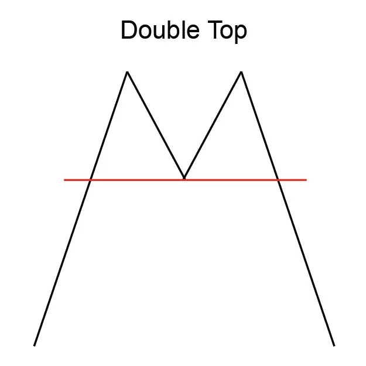
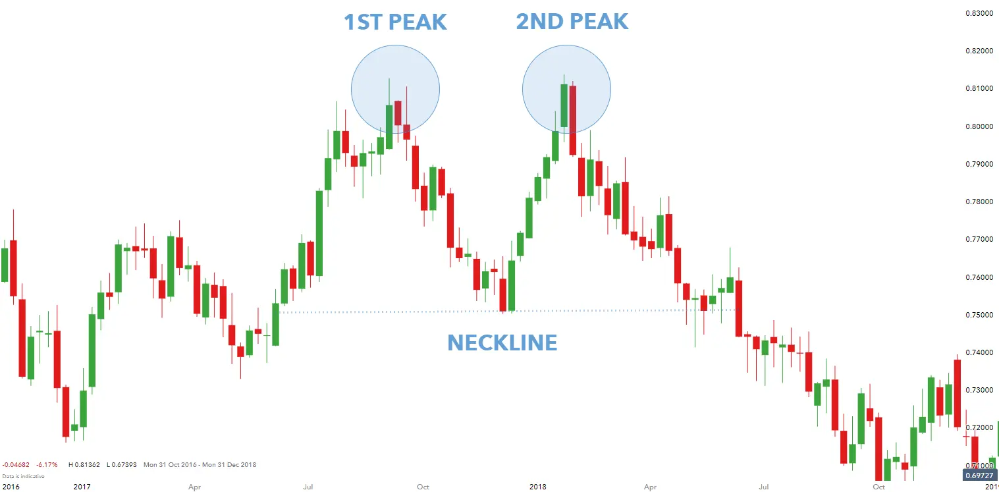

Implicaciones
Un doble top se considera una señal bearish, indicando una posible reversión de
la tendencia ascendente actual a una nueva tendencia descendente.
Descripción
A veces llamado una formación "M" debido al patrón que crea en el gráfico,
el Double Top es uno de los patrones más frecuentemente vistos y comunes. El Double
Top es un patrón de reversión de una tendencia ascendente en el precio de un
instrumento financiero. El Top Doble marca una tendencia ascendente en el proceso de
convertirse en una tendencia descendente.
A veces llamado una formación "M" debido al patrón que crea en el gráfico, el
Double Top es uno de los patrones más frecuentemente vistos y comunes. El Double
Top es un patrón de reversión de una tendencia ascendente en el precio de un instrumento
financiero. El Top Doble marca una tendencia ascendente en el proceso de convertirse en
una tendencia descendente.

Los analistas varían en sus definiciones específicas de un Double Top. Según algunos,
después de que se forme la primera cima, debería seguirse una reacción de al menos el 10%.
Esa disminución se mide de alto a bajo. El segundo rally de vuelta al máximo anterior
(más o menos 3%) debe estar en un volumen más bajo que el primero. Otros analistas sostienen
que la disminución registrada entre los dos picos debería ser de al menos el 20% y que los
picos deberían estar separados por lo menos un mes.
El patrón se compone de dos picos distintos que aparecen cerca del mismo nivel de precio.
Los picos tendrán una cantidad significativa de tiempo entre ellos - que van desde unas
pocas semanas a un año.
En general, el volumen en un Double Top suele ser mayor en la parte superior izquierda que en la derecha.
El volumen tiende a ser hacia abajo a medida que se forman los patrones. El volumen, sin embargo,
se eleva a medida que el patrón alcanza sus picos. El volumen aumenta de nuevo cuando el patrón
se completa, rompiendo el punto de confirmación.
Características importantes
Las siguientes son características importantes para un Double Top.
Tendencia ascendente Top doble anterior
El Double Top es una formación inversa. Comienza con los precios en una tendencia ascendente. La tendencia
hacia arriba debería ser bastante larga y saludable.
Tiempo entre Tops
Los analistas prestan especial atención al "tamaño" del patrón - la duración del intervalo entre
los dos picos. En general, cuanto más largo sea el tiempo entre los dos picos, más importante
es el patrón como una buena señal de reversión. No es raro que pasen unos meses entre las
fechas de las dos cumbres.
Declinar desde la primera parte superior
Cuanto más profundo sea el tronco entre las dos cimas, mejor será el rendimiento del patrón.
Volumen
El volumen tiende a ser más pesado durante el primer pico y más ligero en el segundo.
Es común ver el volumen subir de nuevo en el momento de la breakout.
Retiro después de la breakout
Una retirada después de la breakout es habitual para un Double Top. Cuanto mayor sea el volumen de la breakout,
mayor será la probabilidad de una retirada.
Dos picos en diferentes
Niveles A veces los dos picos que componen un Double Top no están exactamente en el mismo nivel de precio.
Esto no hace que el patrón sea inválido. Algunos analistas señalan que los
inversores deberían preocuparse menos si el segundo pico no alcanza el máximo del primer pico.
Consideraciones de negociación
Duración del patrón
Considere la duración del patrón y su relación con sus horizontes de tiempo de negociación.
La duración del patrón se considera como un indicador de la duración de la influencia de este patrón.
Cuanto más tiempo dure el patrón, más tiempo tardará en que el precio se mueva a su
objetivo esperado. Cuanto más corto sea el patrón, más pronto el precio se moverá a su meta.
Si está considerando una oportunidad de comercio a corto plazo, busque un patrón con una duración corta.
Si está considerando una oportunidad de comercio a largo plazo,
busque un patrón con una duración más larga.
Precio objetivo
El precio objetivo proporciona una importante indicación sobre el movimiento potencial de los
precios que este patrón sugiere. Considere si el precio objetivo para este patrón es suficiente
para proporcionar rendimientos adecuados después de que sus costos (como comisiones) se hayan
tenido en cuenta. Una buena regla es que el precio objetivo debe indicar un retorno potencial
de más del 5% antes de que un patrón se considere útil. Sin embargo, debe tener en cuenta
el precio actual y el volumen de acciones que tiene la intención de negociar. También,
compruebe que el precio objetivo ya no se ha alcanzado.
Tendencia de entrada
La tendencia de entrada es una característica importante del patrón. Una tendencia de entrada
superficial puede indicar un período de consolidación antes de que comience el movimiento
de los precios indicado por el patrón. Busque una tendencia de entrada que sea más larga
que la duración del patrón. Una buena regla es que la tendencia de entrada debe ser al
menos dos veces la duración del patrón.
Criterios que respaldan
Líneas de apoyo y resistencia
Busque una región de apoyo o resistencia alrededor del precio objetivo. Una región de consolidación de
precios o una fuerte línea de apoyo y resistencia en o alrededor del precio objetivo
es un indicador fuerte de que el precio se moverá a ese punto.
Relación entre el patrón y la media móvil
La ubicación de una media móvil relativa al patrón puede ser un buen indicador del potencial del patrón.
El Top Doble debe estar por encima de la Media Móvil. Para patrones de corta duración,
utilice una media móvil de 50 días, para patrones más largos utilice un
promedio móvil de 200 días.
Tendencia de media móvil
La media móvil debe cambiar de dirección dentro del patrón y debe dirigirse en la dirección
indicada por el patrón. Para patrones de corta duración, utilice una media móvil de 50 días,
para patrones más largos utilice un promedio móvil de 200 días.
Volumen
El volumen es importante para un Double Top. Hay que señalar dos características relativas al volumen.
Un fuerte pico de volumen el día de la confirmación del patrón es un indicador fuerte en apoyo
del potencial para este patrón. El pico de volumen debe estar significativamente por encima de
la media del volumen durante la duración del patrón. Además, el volumen a lo largo de
la duración del patrón debería estar disminuyendo en promedio.
Otros patrones presentes
Los patrones inversos (como las líneas de engulfamiento y las islas de Bullish y Bearish)
que ocurren en las cumbres y los valles indican una fuerte resistencia en esos puntos.
La presencia de estos patrones dentro de un Double Top es una fuerte indicación en
apoyo de este patrón.
Criterios que refuten
Sin aumento de volumen en la confirmación
La falta de un pico de volumen el día de la confirmación del patrón es una indicación de
que este patrón puede no ser fiable. Además, si el volumen ha permanecido constante,
o estaba aumentando, durante la duración del patrón, entonces este patrón
debe considerarse menos fiable.
Relación entre el patrón y la media móvil
Una media móvil que está en tendencia en la dirección opuesta a la indicada por el patrón es
una indicación de que este patrón no es fiable. Para patrones de corta duración,
utilice una media móvil de 50 días, para patrones más
largos utilice un promedio móvil de 200 días.
Tendencia de entrada corta
Una tendencia de entrada que es significativamente más corta que la duración del patrón es
una indicación de que este patrón debe considerarse menos confiable.
Comportamiento subyacente
Un doble top ocurre cuando los precios están en una tendencia ascendente. Los precios suben a un
nivel de resistencia, se retiran, y luego vuelven a ese nivel nuevamente antes de disminuir.
Un Double Top a menudo se forma en mercados activos, experimentando una negociación pesada.
El precio de una acción sube rápidamente con un alto volumen. La demanda cae y el precio cae,
a menudo permaneciendo en un pozo durante semanas o meses. Una segunda subida del
precio ocurre tomando el precio de nuevo hasta el nivel alcanzado por el primer top.
Este volumen de tiempo es pesado pero no tan pesado como durante la primera carrera.
Los precios caen por segunda vez, incapaces de atravesar el nivel de resistencia.
Estos dos avances agudos con volúmenes relativamente grandes han agotado el poder
adquisitivo de las acciones. Sin ese poder detrás de él, el instrumento invierte
su movimiento hacia arriba y cae en una tendencia hacia abajo.
Una retirada después de la breakout es habitual para un Double Top. Cuanto mayor sea el volumen de la breakout, mayor será la probabilidad de una retirada. Cuando todo el mundo vende sus acciones poco después de una breakout, lo que queda es un desequilibrio de la demanda de compra (puesto que los vendedores han vendido todos), por lo que el precio sube y se retira al punto de confirmación.
Ejemplo en vivo:
